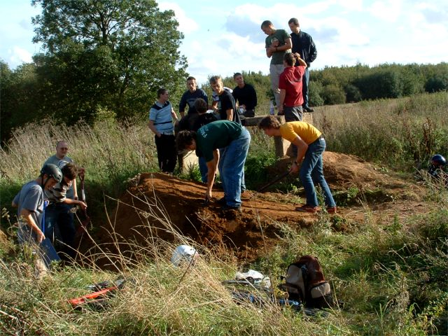

Kiddy Jam was fun. Most of my pictures came out badly because the light wasn't good and i used way too much fisheye because
it was new. But I had a fun day and rode my bike lots and fell off quite a lot so it was worth it.